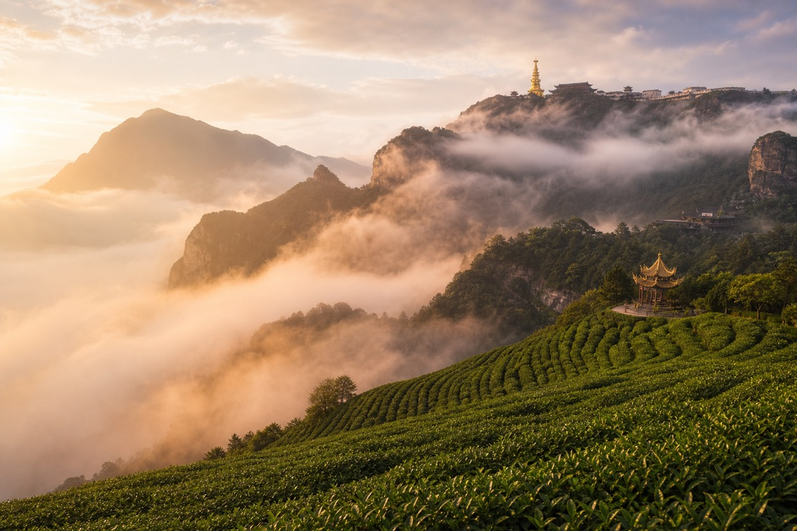

What is Zhuyeqing?
Zhuyeqing (竹叶青, "Bamboo Leaf Green") is a premium flat-shaped green tea grown on the mist-shrouded slopes of Mount Emei (峨眉山) in Sichuan Province, China. The tea takes its poetic name from the shape of its leaves — slender, flat, and tapered at both ends, resembling tender bamboo leaves.

Mount Emei — where clouds, Buddhism, and tea have intertwined for millennia
The tea was officially named in 1964 by Marshal Chen Yi (陈毅), China's then-Foreign Minister. While visiting a Buddhist temple on Mount Emei, a monk served him a cup of the local spring tea. Enchanted by its fresh fragrance and the graceful dancing of leaves in the glass, Chen Yi asked for its name. When told it had none, he said: "The leaves look just like bamboo — let's call it Zhuyeqing."
"竹叶青青不肯黄，枝条楚楚耐严霜。" — The bamboo stays green and refuses to turn yellow, its branches stand elegant through the harshest frost.